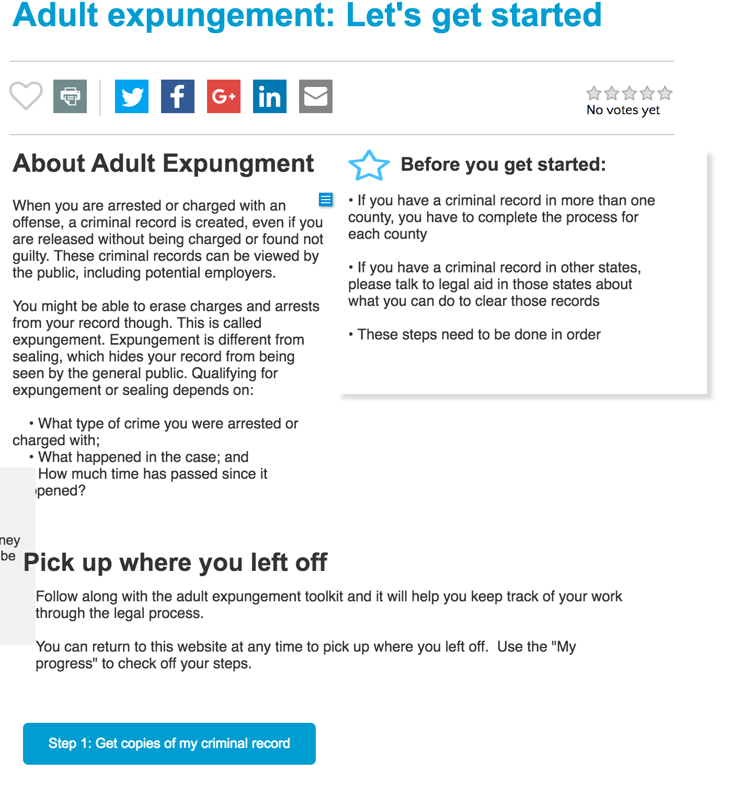

Toolbox “Tools” Content Type¶
The toolbox “tool” content type is tied to a specific toolbox. It is designed to walk a user through a set of steps to complete a process (for example, in our criminal expungement toolbox, there would be a tool for expunging an adult criminal record and another tool for expunging a juvenile criminal record).
Toolbox Tools must have:
- Title
- Overview. This text field displays as the content on the page
- Before you get started. This text appears at the top of the page with any critical information the user needs to be aware of before embarking on a process.
- Pick up where I left off. This appears below the overview and reminds the user that they can come back and complete their work.
- Toolbox: the toolbox that the tool is a part of.
The toolbox tool may have a “Learn More” component. The learn more component may be: * Taken from an existing Guide. This will pull the learn more articles from an existing Guide. * Created manually. Content authors may enter up to 6 nodes to include. The nodes are limited to:
- Legal content
- ADRM content
- Blog posts
- Selector form label. Most toolboxes will contain multiple tools and we need to encourage the user to pick which tool(s) they need to complete.

The image above represents a tool page. The Step button is populated automatically from the steps.